Repaso de la Tanda 10N11
El alojamiento gratis y con pase, «Cómo llegar a tu alojamiento», los candados del pase, la lista del pase por puntos y HOY sin pase. Marca cada punto en tu teléfono cuando lo hayas comprobado (se guarda en este navegador).
0 · Antes de empezar ✅ Hecho — Prompt guardado en docs/dias/PROMPT_TANDA10N11.md e incluido en el commitDónde: No es de móvil. ✅ Hecho — Reglas de la app: las nuevas de esta tanda, añadidas a docs/REGLAS_DE_LA_APP.mdCandado siempre igual, con el pase sin frases del pase, y el alojamiento (apartado 7). Dónde: No es de móvil. ✅ Hecho — Design al día desde RETOQUES.zip (Vuelo Reservas, Alojamiento Dias, Pase Lista, Pase Incluye, Pase Estilo, Pase Escena 4b, Recuerdos Ficha, Viaje Compartido)Solo lo que cambia. Dónde: No es de móvil. ✅ Hecho — Cómo trabajar: hasta 4 agentes, un servidor, hasta 2 Chrome, nota de estado cada 30 min, sin apagar el PC hasta el finalAl final, con tu permiso del 29-oct, se apaga el PC. Dónde: No es de móvil. ✅ Hecho — Antes de la 10N11: no apagar el PC (CLAUDE.md), comprobar la 0065 con dos cuentas reales, PDF de Civitatis fuera de gitLa comprobación dio 10 comprobaciones, 0 fallos, y los 8 casos llegan en menos de 1 s (tabla en el informe). El PDF está en el .gitignore. Dónde: No es de móvil. 1 · Reglas nuevas ⚠️ A medias — El candado del pase, siempre igual: dorado sobre un círculo azul oscuro, también en las líneas pequeñas, en todas las pantallas del paseHecho en EXPLORAR (Baños, Fuentes), Cerca de ti, Escuchar historia, alojamiento y vuelo. Se dejan sueltos los candados que van dentro de un botón ya azul o dorado (pastilla «Pase Roma» de RUTA, botón del día de vuelta sin hora, [Ver] de la caja azul). Falta la pastilla «Pase Roma» con candado redondo de la tarjeta de Mis viajes (Viaje Compartido), que no existe hoy en la app. Dónde: EXPLORAR > Baños y Fuentes, Cerca de ti, ficha de un sitio sin pase (cuenta sin pase). 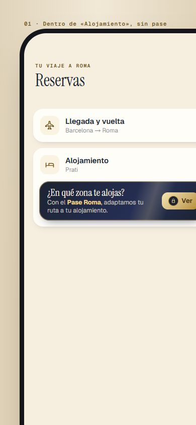
✅ Hecho — Con el pase, sin frases del paseComprobado con pase en RUTA, DÍAS (días 1 y 2), RESERVAS y EXPLORAR: ni líneas, ni candados, ni «Con el Pase Roma,…». Dónde: Cuenta con pase: RESERVAS, DÍAS, EXPLORAR. 2 · El alojamiento ✅ Hecho — Gratis: nombre del hotel, ¿Para quién?, ¿Cuánto ha costado?, ¿Quién lo ha pagado? Con pase, además zona y direcciónDónde: RESERVAS > Alojamiento > Añadir mi alojamiento (cuenta sin pase y con pase). 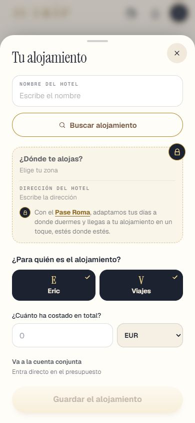
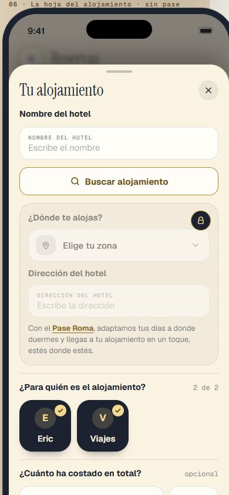
✅ Hecho — La hoja «Tu alojamiento» en el orden pedido: nombre + [Buscar alojamiento], zona y dirección, ¿Para quién?, precio, ¿Quién lo ha pagado? (todas las personas marcadas), la línea y [Guardar el alojamiento][Buscar alojamiento] cierra la hoja y abre el mapa; no guarda lo escrito en la hoja. Dónde: RESERVAS > Alojamiento (cuenta de Eric). 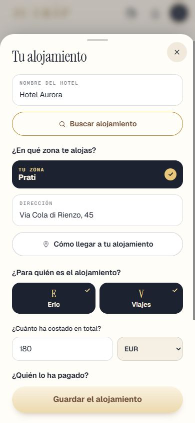
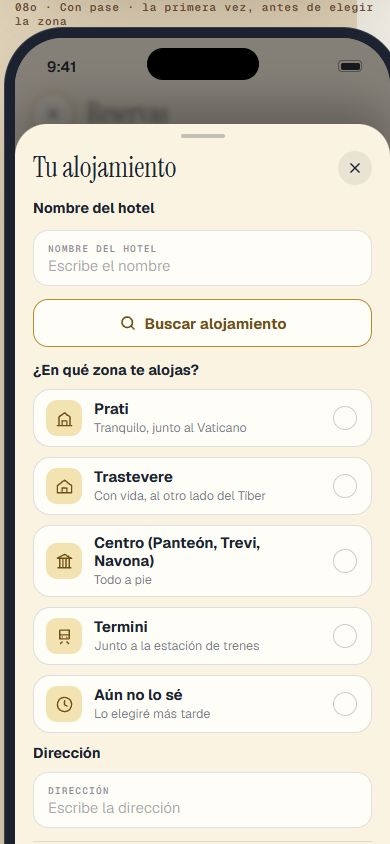
⚠️ A medias — Sin pase: bloque pequeño gris con candado («¿Dónde te alojas?», «Dirección del hotel») y la línea de Design; al tocarlo, el paseAl tocarlo abre la lista del pase (lo que hace abrirPase() desde la 10N10), no el aviso pequeño de antes. Dónde: RESERVAS > Alojamiento (cuenta sin pase). ✅ Hecho — Con pase: la primera vez la lista de zonas; una vez elegida, un desplegable cerrado «TU ZONA · Prati ✓» que al tocarlo abre las demás; debajo Dirección y [Cómo llegar a tu alojamiento]Al abrirse salen todas las zonas del destino (7 con «Aún no lo sé»); Design dibuja 5. Dónde: RESERVAS > Alojamiento (cuenta con pase). 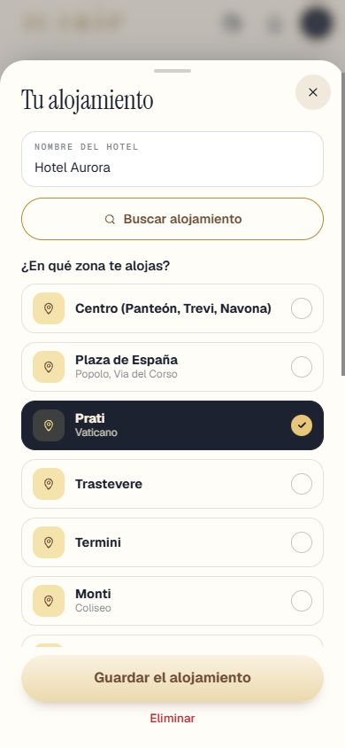
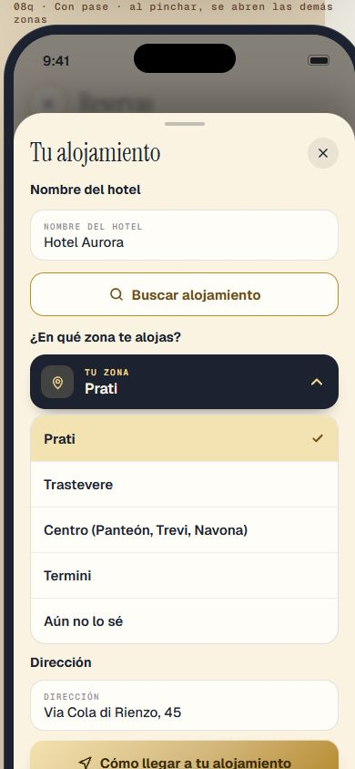
✅ Hecho — Fuera la caja «Tu primer día, cerca de donde duermes» y la de «¿En qué zona te alojas?», en la hoja y en la tarjetaSe quitó también la casilla «Dirección de tu alojamiento» de la tarjeta (ahora se edita solo en la hoja). Dónde: RESERVAS > Alojamiento. ✅ Hecho — No se pierde nada de lo que hay hoy en el bloque del alojamientoSiguen [Eliminar], [Cambiar], noches y precio. Dónde: RESERVAS > Alojamiento ya guardado. 3 · Cómo llegar a tu alojamiento ✅ Hecho — RESERVAS, tarjeta del alojamiento (09 y 09p), con y sin paseDónde: RESERVAS > Alojamiento guardado. 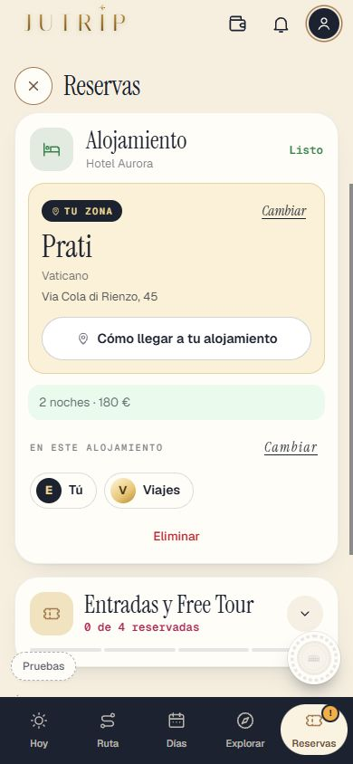
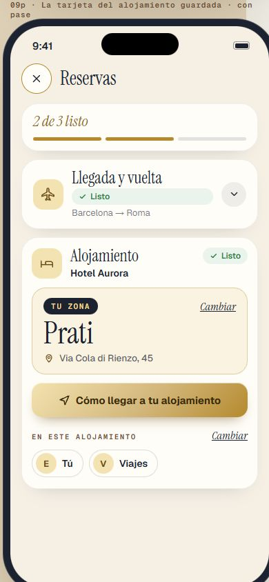
✅ Hecho — DÍAS, dentro del día 1 (01, 02 y 02b): sin alojamiento, con pase y sin pase; [Ir] sin pase abre el paseCon varios destinos, la zona y la dirección son del viaje entero y solo salen en la primera estancia. Dónde: DÍAS > día 1 (sin alojamiento, con pase y sin pase). 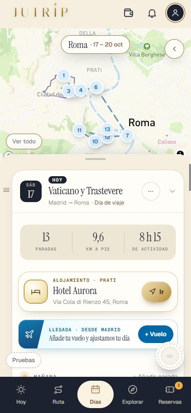
⚠️ A medias — HOY: [Cómo llegar a tu alojamiento] al empezar y al acabar el día; sin pase no saleProbado en navegador con un viaje en curso; falta verlo en un día real. En el día de vuelta, al empezar, no sale. Dónde: HOY (cuenta con pase). 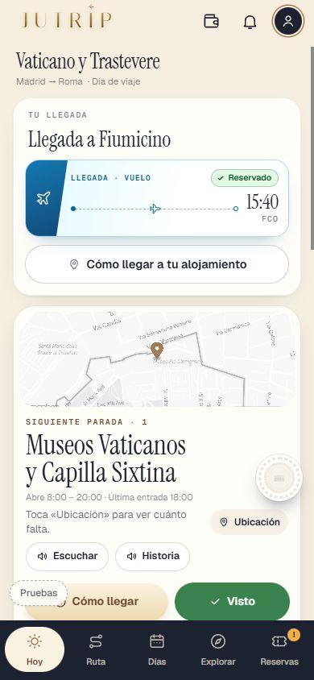
✅ Hecho — [Cómo llegar] abre el camino desde donde está el viajero hasta la dirección del hotelEl mismo enlace de siempre (Google Maps en transporte público). Dónde: Con pase y dirección guardada. 4 · El vuelo ✅ Hecho — DÍAS, tarjeta del vuelo: «Aterrizas a las 15:40» y «Fiumicino · Cómo llegar desde el aeropuerto»; fuera «libre hacia las 17:40»«Libre hacia» ya no existía desde la 6t. La línea del aeropuerto puede ocupar dos líneas en 390 px. Dónde: DÍAS > día 1 con la hora del vuelo guardada. 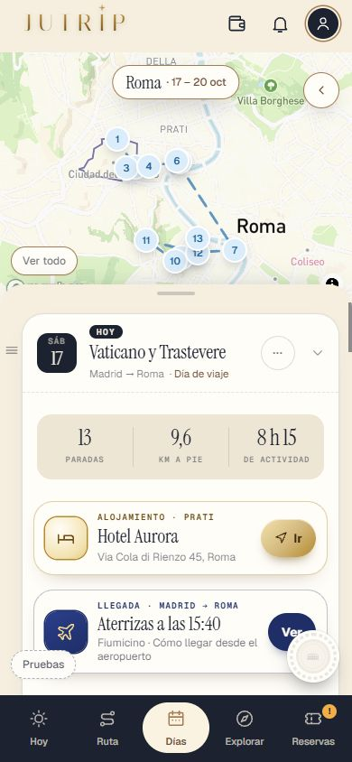
✅ Hecho — Hoja del vuelo: sin pase la línea gris con el candado «Con el Pase Roma, adaptamos tu primer y tu último día a tus vuelos.»; con pase, sin líneaSale en la hoja del administrador. Dónde: RESERVAS > Llegada y vuelta (cuenta sin pase y con pase). 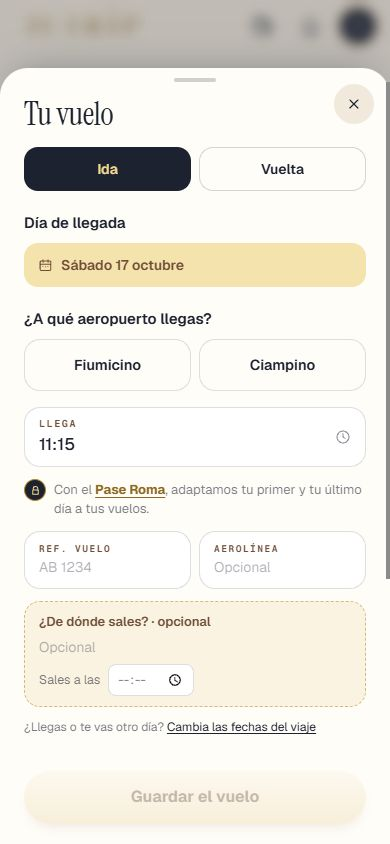
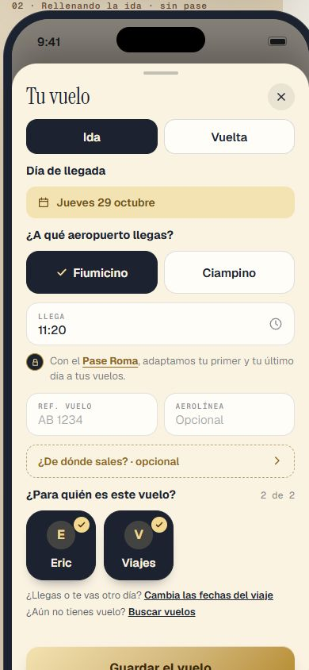
✅ Hecho — «¿Para quién es este vuelo?» como en DesignDónde: RESERVAS > Llegada y vuelta. ⚠️ A medias — «Tú» con su inicial («E»), no con una «T», en todas las tarjetasEn la prueba sale «E» (nombre «Eric»). No se ha encontrado de dónde saldría una «T»: las iniciales salen del nombre o del email. Si la ves con «T», dime con qué cuenta. Dónde: RESERVAS > «En este vuelo» y «En este alojamiento». 5 · Lista del pase y HOY sin pase ✅ Hecho — La lista del pase como Design (Pase Lista 1), con sus dibujos, textos, precios y [Elegir mi pase]; todo lo que abría la película abre esta listaComponente propio generado de la pieza de Design (6 secciones, 19 puntos). [Elegir mi pase] queda al final de la lista, como Design, sin barra fija. Dónde: RUTA > pastilla «Pase Roma» (cuenta sin pase). 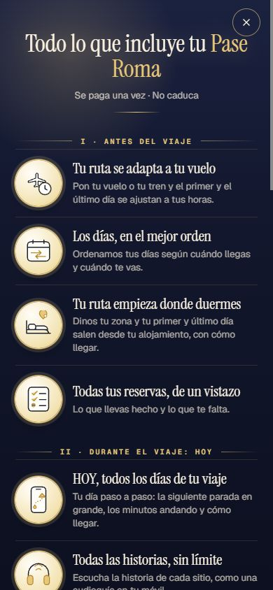
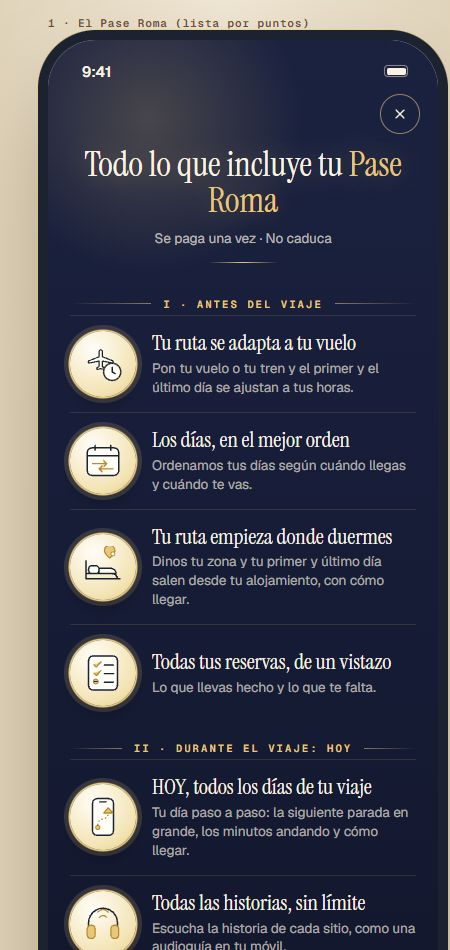
✅ Hecho — Cada punto de la lista existe de verdad en la app (data/pase/incluye.json)Existen todos; ninguno se quitó. «Tu ruta empieza donde duermes … con cómo llegar» depende del trabajo de esta tanda. Dónde: No es de móvil. ✅ Hecho — «¿Cuántos sois?» y la compra siguen funcionando; con pase, «✓ Tu Pase de Roma está activo»Quedan «Pase Roma» (cabecera, caja, botón) y «Pase de Roma» (el ✓ activo). Dónde: Lista del pase > [Elegir mi pase] (sin pase y con pase). 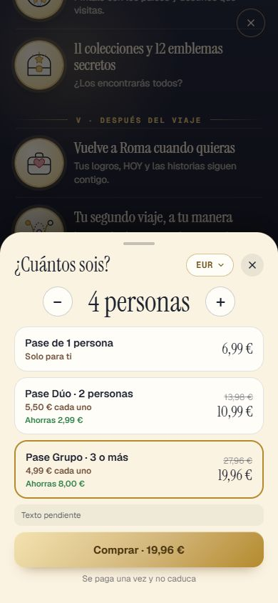
⚠️ A medias — HOY sin pase (2 y 2b): «HOY, tu guía del día», los puntos con sus dibujos y la caja según el día de prueba (sin usar / ya usado) y [Ver el Pase Roma] que abre la listaSustituye toda la pestaña HOY sin pase: ya no salen la cuenta atrás, «Pon tus fechas», «Tu viaje ha terminado» ni los avisos de la prueba. El ✕ lleva a DÍAS. Dónde: HOY (cuenta sin pase, con el día de prueba sin usar y ya usado). 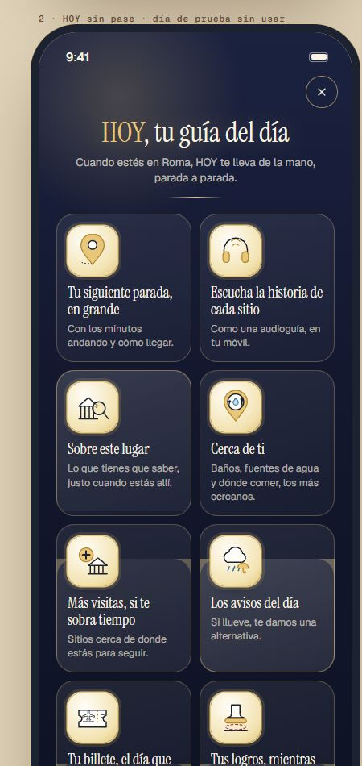
6 · La prueba ✅ Hecho — Solo las pruebas de lo que tocas y pruebaJutrip, en 0 fallosPasadas 35 pruebas de lo tocado más pruebaJutrip (129/0), todas en 0 fallos (dos cayeron una vez por el navegador de prueba y pasaron sueltas). Detalle en el informe. Dónde: No es de móvil. ✅ Hecho — Prueba nueva pruebaTanda10N11116 comprobaciones (a 36, b 15, c 47, g 18), 0 fallos. Dónde: No es de móvil. ⚠️ A medias — Capturas en docs/dias/capturas_jutrip/ y en REPASO_10N11.html, a tamaño de móvil, al lado de las de DesignFaltan algunas capturas de Design (DÍAS día 1 y vuelo) y regenerar las dos del alojamiento antes del último pulido. Dónde: Esta página. 7 · El informe ✅ Hecho — Apartado «10N11» en INFORME_TANDA10B.md (pruebas, lo que no se pudo hacer como Design, migración) y esta lista al finalNo hace falta migración. Dónde: No es de móvil. Todas las capturas
10n11_aloj_01_hoja_con_pase_zona_elegida 10n11_aloj_01_hoja_con_pase_zona_elegida_design 10n11_aloj_02_tarjeta_con_pase 10n11_aloj_02_tarjeta_con_pase_design 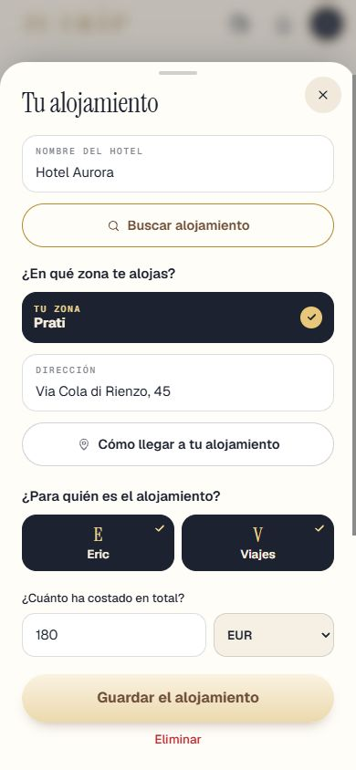
10n11_aloj_03_hoja_desplegable_cerrado 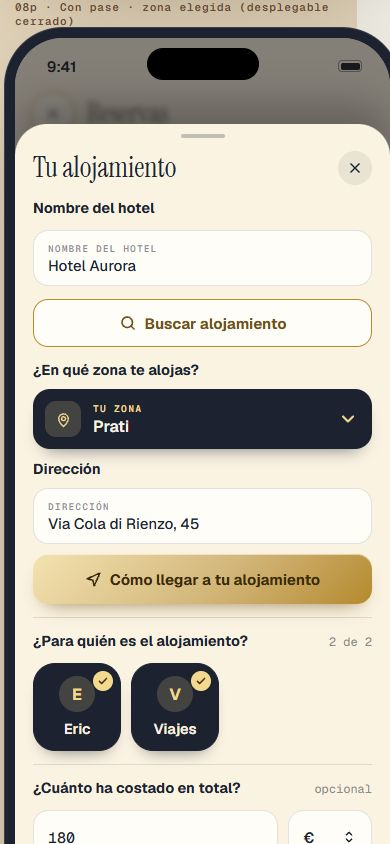
10n11_aloj_03_hoja_desplegable_cerrado_design 10n11_aloj_04_hoja_desplegable_abierto 10n11_aloj_04_hoja_desplegable_abierto_design 10n11_aloj_05_hoja_sin_pase 10n11_aloj_05_hoja_sin_pase_design 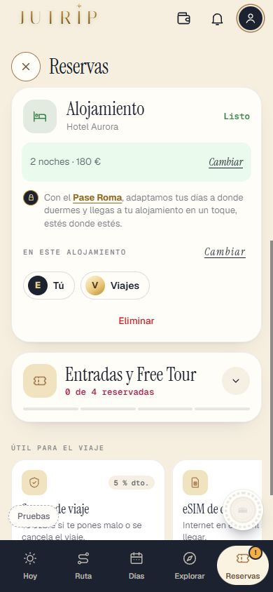
10n11_aloj_06_tarjeta_sin_pase 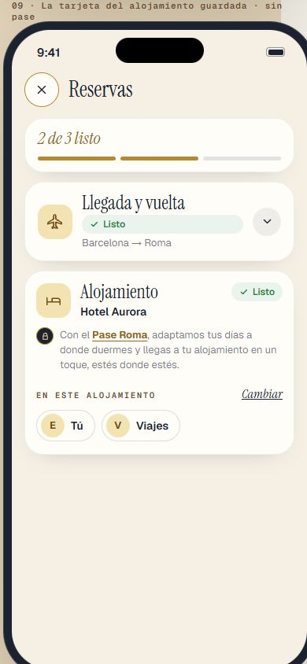
10n11_aloj_06_tarjeta_sin_pase_design 10n11_aloj_07_vuelo_sin_pase 10n11_aloj_07_vuelo_sin_pase_design 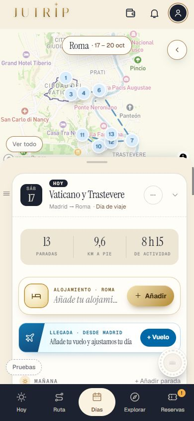
10n11_alojamiento_dias_01 10n11_alojamiento_dias_02 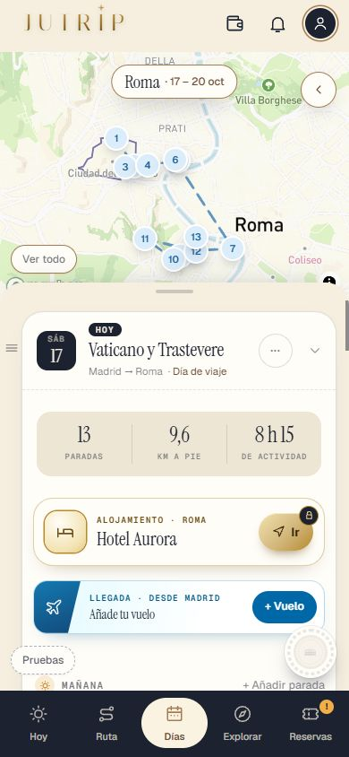
10n11_alojamiento_dias_02b 10n11_alojamiento_dias_03 10n11_alojamiento_hoy_con_pase 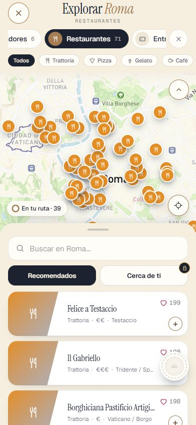
10n11_candado_cerca_de_ti 10n11_candado_con_pase_explorar 10n11_candado_design_pase_estilo 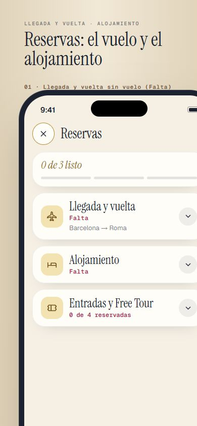
10n11_candado_design_vuelo_reservas 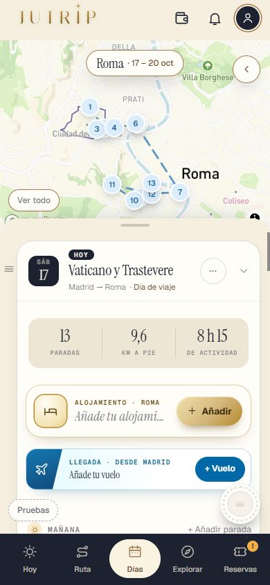
10n11_candado_dias 10n11_candado_explorar 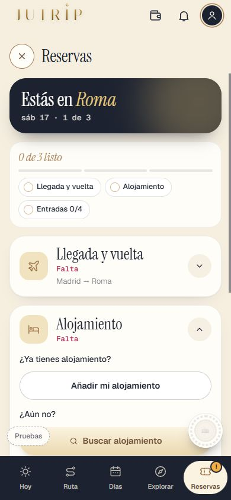
10n11_candado_reservas 10n11_hoy_sin_pase_1_sin_usar 10n11_hoy_sin_pase_1_sin_usar_design 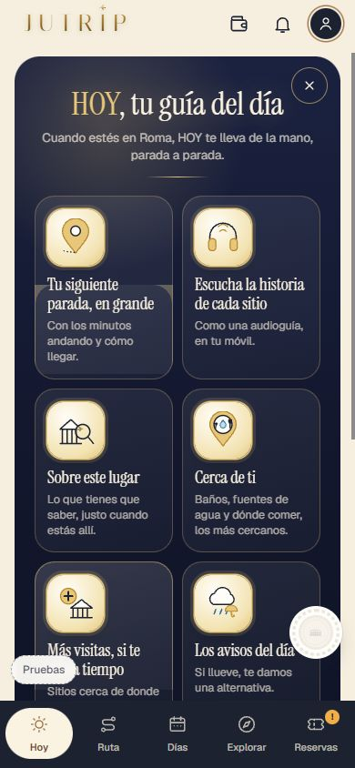
10n11_hoy_sin_pase_2_usado 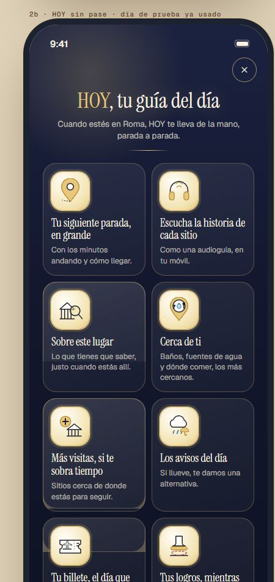
10n11_hoy_sin_pase_2_usado_design 10n11_lista_pase_1 10n11_lista_pase_1_design 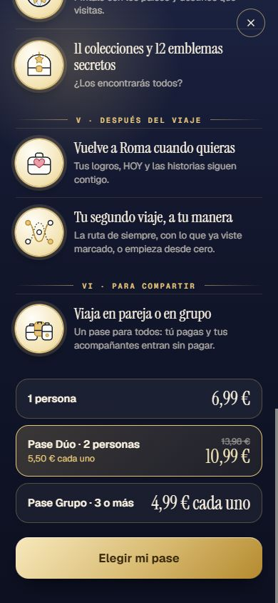
10n11_lista_pase_2_final 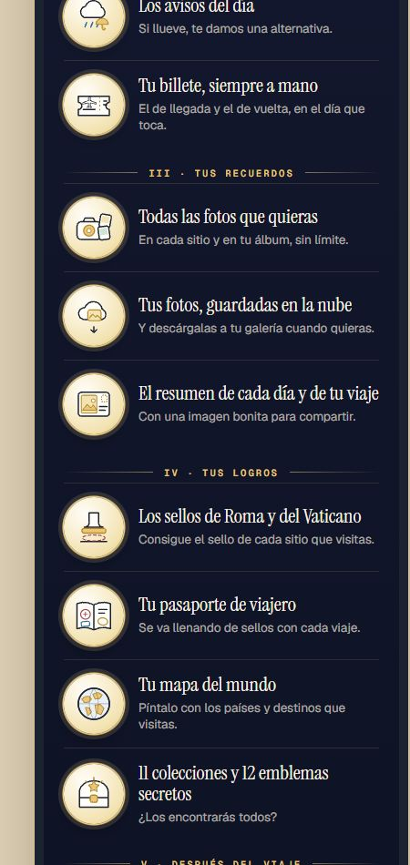
10n11_lista_pase_2_final_design 10n11_lista_pase_3_cuantos 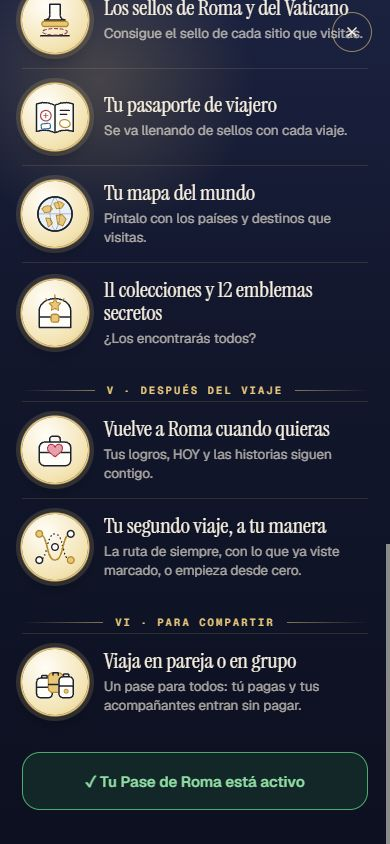
10n11_lista_pase_4_con_pase